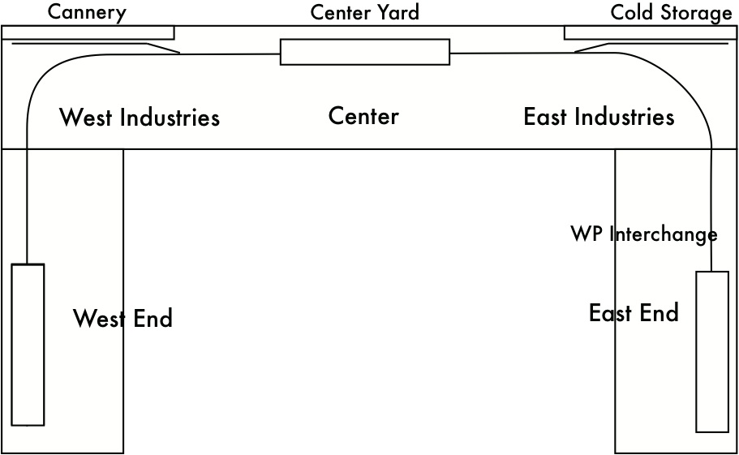
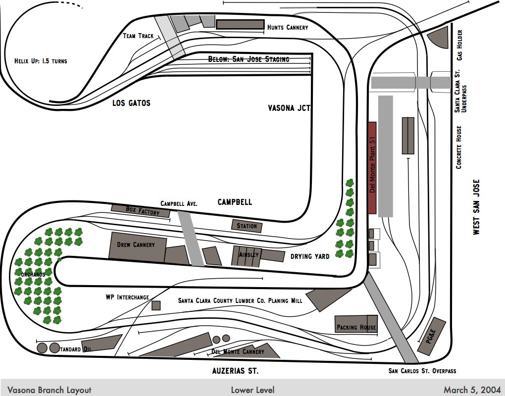

 This example switch list layout simulates the switching railroad in a Stockton, CA industrial development. The railroad interchanges on the west with the Southern Pacific and on the east with the Western Pacific. The industrial area has a western area ("West Industries"), eastern area ("East Industries"), and yard between the two.
Two versions exist for this layout, "Stockton with Divisions" that uses divisions so that WP cars exit through the west yard and SP cars and foreign cars through the east, and another "Stockton Example" which allows cars to exit via either yard.
There is one train, a daily switching run that goes from the yard to the west industries, then to the SP interchange, then to the east industries, and finally to the WP interchange before returning to the yard.
The cargos have most of the traffic going via the SP, with a few going via the WP. This is prototypical; most shippers sent occasional loads through the WP to encourage competition, but sent the bulk of their loads through the SP.
Note that the foreign boxcars are associated with the East division, which are handled by the SP interchange. This special division ensures these boxcars are used only for the produce leaving the West Warehouse. The incoming cans come from the SP, so only SP boxcars will carry them.
 This is my model railroad; it models a Southern Pacific branch in San Jose, CA. Most of the industries are canneries. There are two major staging yards on each end, several towns in-between, and an interchange track for the Western Pacific (which is modeled as if it were a staging yard.)
Check out the Vasona Branch homepage for more details on the railroad, towns, and industries. The track plans may help you understand the SwitchList layout configurations.
This layout is based on an example from Iain Rice's "Waterside Yard" track plan in his book "Small, Smart, & Practical Track Plans" published by Kalmbach Publishing in 2000. This demonstration layout is based on on a track plan that had a large midwestern rail yard, a branch going to staging, and east and west traffic going to staging.
This switchlist file shows how through trains can be set up, and how to use divisions to get cars routed the correct ways.
{kind=link}
{kind=link}